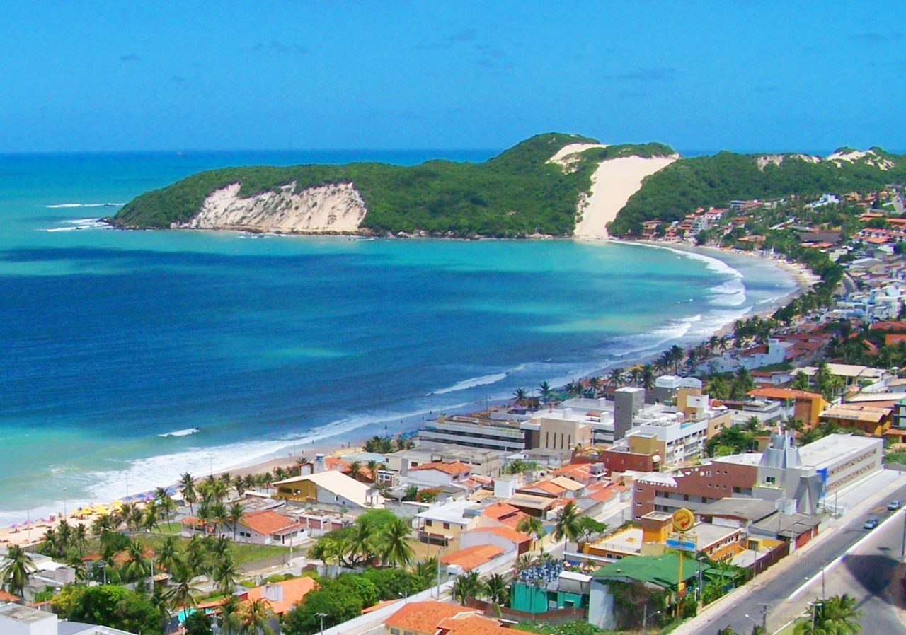

Natal,RN
Viajar para Natal (RN) é mergulhar em um cenário paradisíaco que une sol quase o ano todo, rica cultura e marcos históricos. Conhecida como a "Cidade do Sol", abriga a famosa Praia de Ponta Negra e o imponente Morro do Careca. É o destino ideal para quem busca aventura em emocionantes passeios debuggy pelas dunas de Genipabu, praias de águas mornas e uma excelente culinária nordestina, garantindo uma experiência inesquecível.